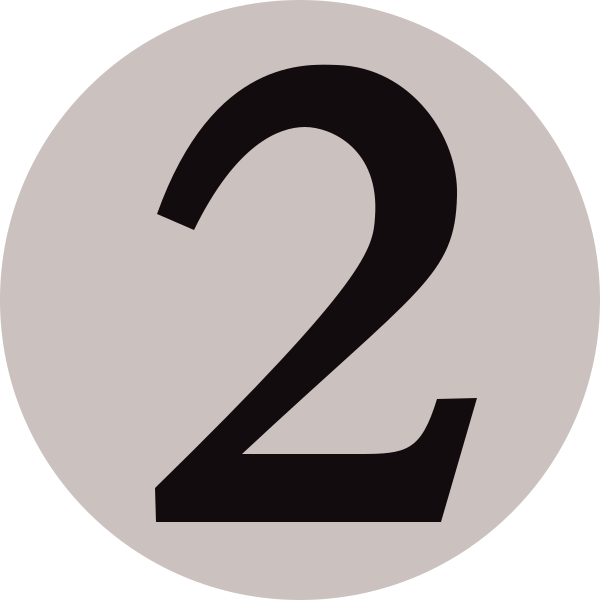
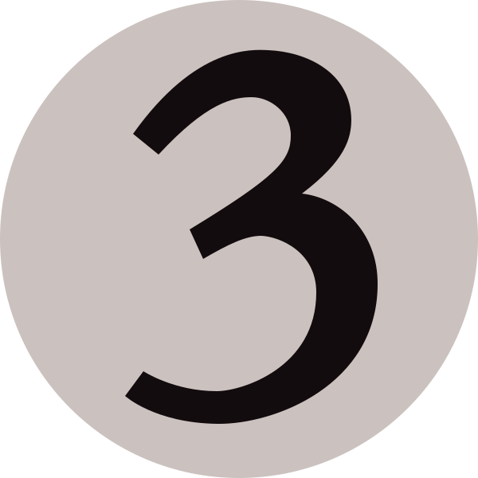

To use this page, look at the open mana the opponent has, and click on the buttons below that they have available. everything above 4 mana is listed under 4.
For example, if your opponent has 2 plains and a swamp open, you click on Blue, Red, Green and Four or more, and you'll be left with the possibilities they have left.
I apologise for how rushed the layout is, I plan on working to improve it over the next few days. Also, I have yet to implement functionality for filtering multicolor cards by color, so for the time being they're only filtered depending on the mana value. For a quick reset you can just refresh the page.


Current Selection:
White: No
Blue: No
Black: No
Red: No
Green: No
Blue: No
Black: No
Red: No
Green: No
1 or less: No
2: No
3: No
4 or more: No
2: No
3: No
4 or more: No